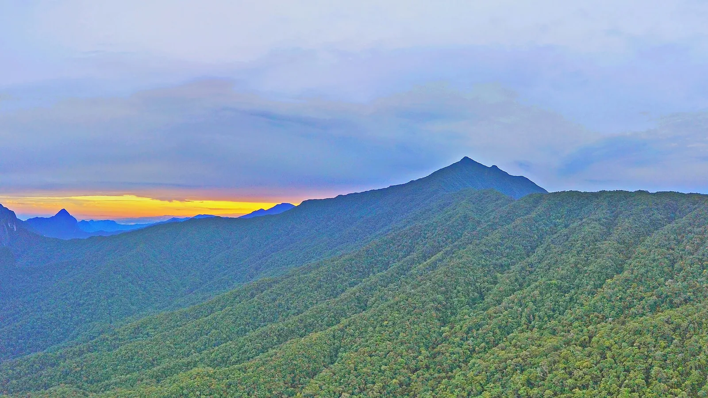

OV9 · Otros vuelos
OV9 · Andere Flüge
OV9 · Other flights
Gunung Mulu
Información
Gunung Mulu, en Borneo, estado de Sarawak, es el área de karst tropical más estudiada del mundo. Son 52.864 hectáreas con diecisiete zonas de vegetación y unas 3.500 especies de plantas vasculares; sus palmeras son excepcionalmente diversas, con 109 especies en veinte géneros.
Lo domina el Gunung Mulu, un pináculo de arenisca de 2.377 metros. Debajo hay al menos 295 kilómetros de cuevas exploradas, donde viven millones de vencejos y murciélagos.
La Sarawak Chamber —600 metros por 415, y 80 de altura— es la cámara subterránea más grande que se conoce.
Information
Gunung Mulu, en Borneo, estado de Sarawak, es el área de karst tropical más estudiada del mundo. Son 52.864 hectáreas con diecisiete zonas de vegetación y unas 3.500 especies de plantas vasculares; sus palmeras son excepcionalmente diversas, con 109 especies en veinte géneros.
Lo domina el Gunung Mulu, un pináculo de arenisca de 2.377 metros. Debajo hay al menos 295 kilómetros de cuevas exploradas, donde viven millones de vencejos y murciélagos.
La Sarawak Chamber —600 metros por 415, y 80 de altura— es la cámara subterránea más grande que se conoce.
Information
Gunung Mulu, en Borneo, estado de Sarawak, es el área de karst tropical más estudiada del mundo. Son 52.864 hectáreas con diecisiete zonas de vegetación y unas 3.500 especies de plantas vasculares; sus palmeras son excepcionalmente diversas, con 109 especies en veinte géneros.
Lo domina el Gunung Mulu, un pináculo de arenisca de 2.377 metros. Debajo hay al menos 295 kilómetros de cuevas exploradas, donde viven millones de vencejos y murciélagos.
La Sarawak Chamber —600 metros por 415, y 80 de altura— es la cámara subterránea más grande que se conoce.
La UICN evalúa Gunung Mulu como «bueno, con algunas preocupaciones». Lo que protege al sitio es sobre todo su aislamiento: no hay acceso por camino público al interior del parque, el terreno es abrupto, y a eso se suman la base legal de protección y los proyectos internacionales de investigación.
Es una protección que depende de que el lugar siga siendo difícil de alcanzar.
La UICN evalúa Gunung Mulu como «bueno, con algunas preocupaciones». Lo que protege al sitio es sobre todo su aislamiento: no hay acceso por camino público al interior del parque, el terreno es abrupto, y a eso se suman la base legal de protección y los proyectos internacionales de investigación.
Es una protección que depende de que el lugar siga siendo difícil de alcanzar.
La UICN evalúa Gunung Mulu como «bueno, con algunas preocupaciones». Lo que protege al sitio es sobre todo su aislamiento: no hay acceso por camino público al interior del parque, el terreno es abrupto, y a eso se suman la base legal de protección y los proyectos internacionales de investigación.
Es una protección que depende de que el lugar siga siendo difícil de alcanzar.
Fuentes
Quellen
Sources
- UICN, Perspectiva del Patrimonio Mundial (evaluación 2025), Gunung Mulu National Park — https://worldheritageoutlook.iucn.org/explore-sites/gunung-mulu-national-park
Galería
Galerie
Gallery


Fuentes
Quellen
Sources
- UNESCO, Centro del Patrimonio Mundial, Gunung Mulu National Park — https://whc.unesco.org/en/list/1013/ consultado 2026-10-06abgerufen 2026-10-06accessed 2026-10-06